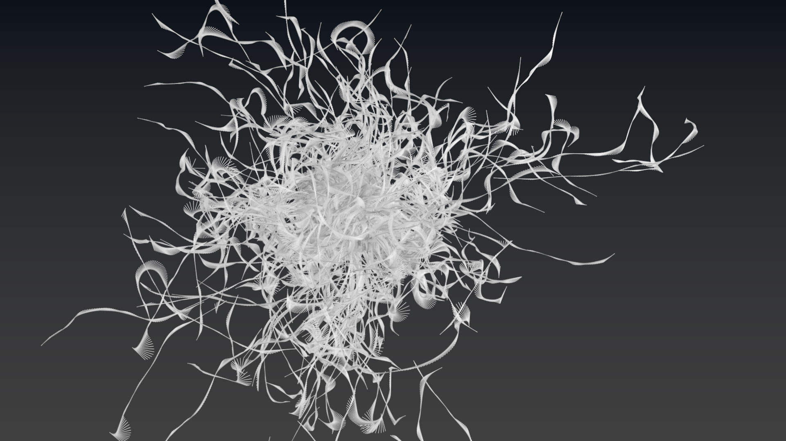
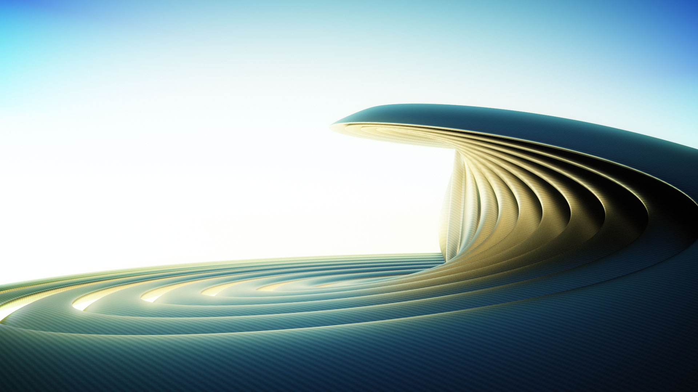
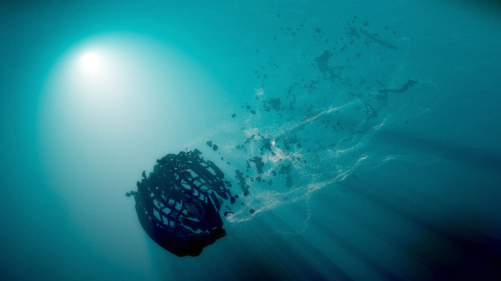
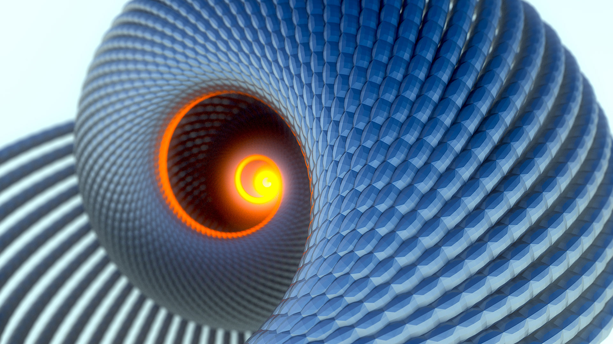

The Cube Experiment
The project started one evening when I had nothing else better to do. So I opened up the 3D application Blender and started tinkering with the particle system aimlessly. A short while later this emerged:
 It's nothing to write home about. But I mused at the fact that the image consists of only a particle system on the default cube. Which lead me to pounder, how far one can I push Blender using only a cube object? And so the Default Cube Experiment was born.
Constraints leads to creative solutions. So I set out to create the rules for my own experiment.
Not Allowed:
- More than 1 cube object
- Any modelling (including sculpting) of the cube
- Curves, Surfaces, Metaball and Text when used as on-screen geometry
Allowed:
- Any number of Empty, Lattice, Light, Camera, Group, Material, Texture and Nodes. Modifier stack, particles and simulation are allowed and encouraged.
- Weight painting is the exception to the ‘No editing of base mesh’ rule and is allowed.
- Curves when they are not being used directly as visible geometry.
- Post-processing as the modifications do not introduce any significantly new visual element.
At the time, I haven't actually produced any artwork in a while (I've been mostly on coding duty). The idea is to crank out one these each day continously for a few weeks to get the creative juice flowing again. I was very glad I did.
The above image from Day 5 shows me still being mentally constrained to the particle system, I went nuts and just stacking explode modifiers. The spinning top below was a joy to model and render. Really liked the ease of setting up a photorealistic scene in Cycles. Because I am only limited to one cube per scene, modelling the scene required some clever hacks. The floor that the top is on is actually the tip of an instanced copy of the top, just enlarged by 100x.
Day 12 below. Am getting more creative with the mesh modifiers. Being able to iterate this quickly on a workstation with a fast GPU allowed me to setup the material and lighting extremely fast.
The image below is unique because it's one of the few times that I started the session with an idea of what I wanted to do. Normally I would just mess with things until something likable came about, then spend time refinining it. This one started off with me wanting to do a photorealistic macro shot of grass.
Wanted to try out Non-Photorealistic Rendering by recreating Katsushika Hokusai's The Great Wave. Ended up being something out of Frozen.
Open Happiness